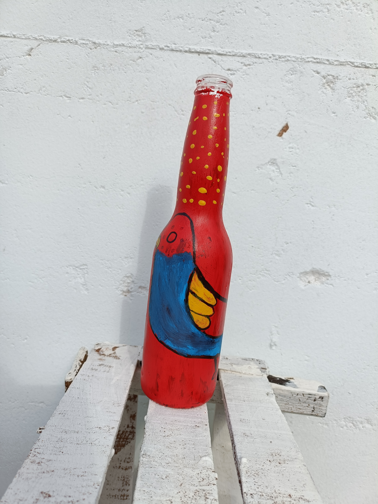
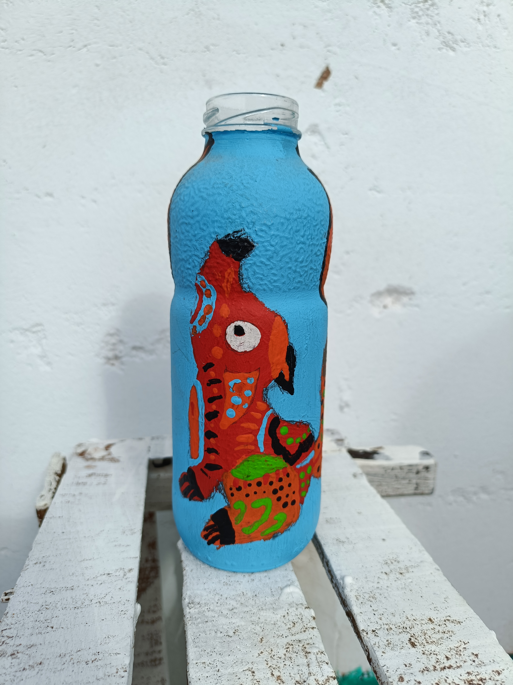
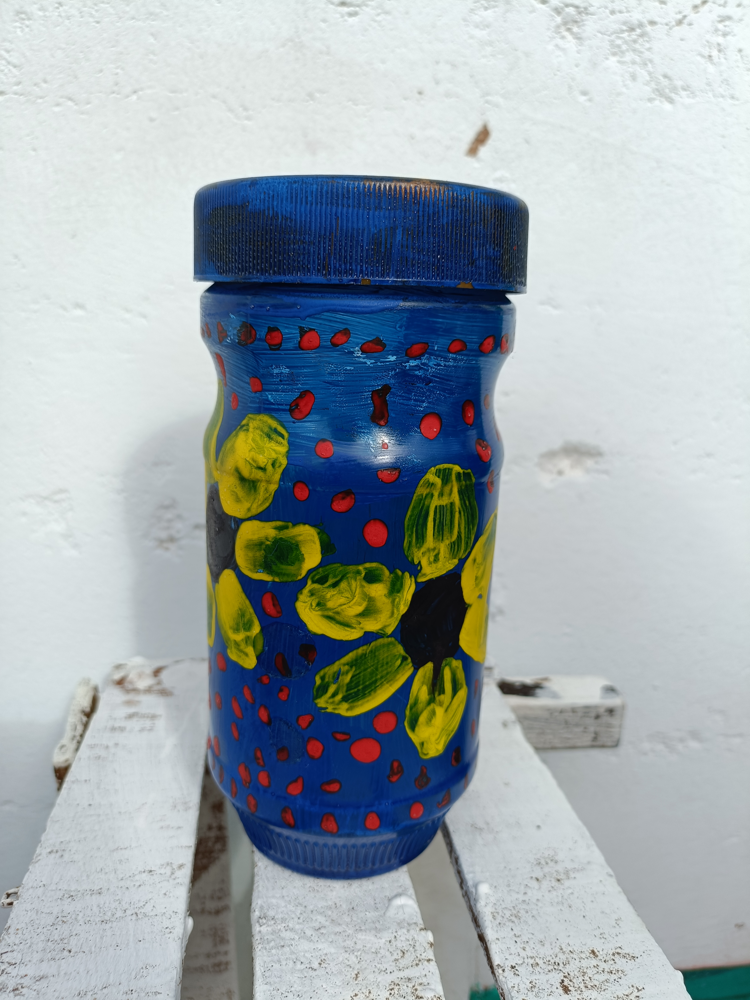
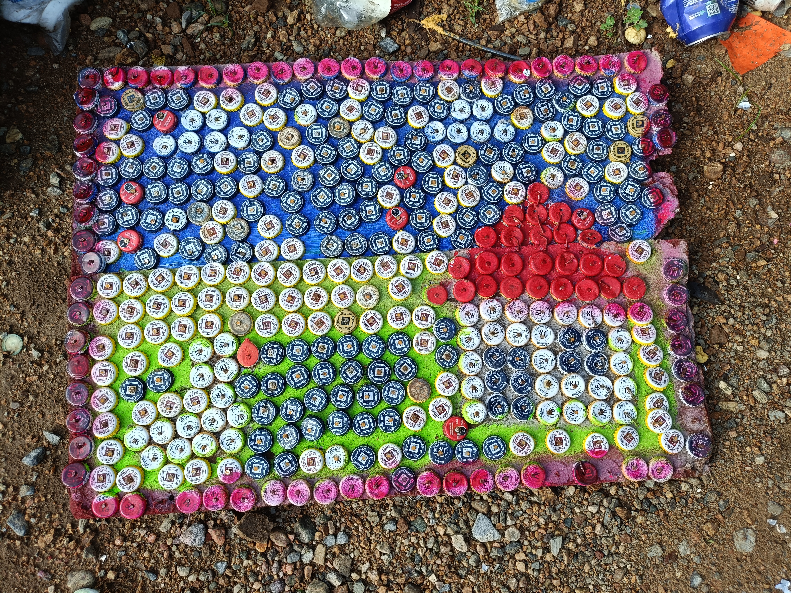

¿Qué es el proyecto PEC?
El proyecto PEC "Proyecto Escolar Comunitario": Arte Sustentable" busca concientizar a la comunidad escolar sobre la importancia del reciclaje mediante la creación de arte. Y mejorar el entorno ambiental.
¿Por qué se realiza en las escuelas?
Se realiza para fomentar la cultura ambiental desde temprana edad y desarrollar la creatividad de los alumnos con materiales reutilizados.
Actividades del semestre
Este semestre desarrollamos: 1. Sillones con conos de huevo. 2. Botellas de cristal decorativas. 3. Manualidades con hojas recicladas.. Por ultimo: Venta de los objetos y las monedas son tapitas.



